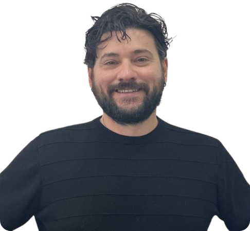

"Minha experiência como professor foi desafiadora e extraordinária. Ao adaptar metodologias e promover a autonomia, percebi o impacto real no desenvolvimento da aluna. Um dos momentos mais marcantes foi acompanhar o seu progresso no uso autônomo do computador, algo que inicialmente parecia inatingível. Cada pequeno reconhecimento de letras, executando comandos básicos e navegando entre páginas era uma recompensa imensa. Aprendemos a valorizar pequenas conquistas, que na verdade representam grandes vitórias. Fora da sala de educação, também aprendemos com nossos alunos todos os dias."
Relatos

"Uma situação que me marcou positivamente foi ver a aluna fazer o login no computador da escola pela primeira vez sem precisar conferir os dados, mostrando autonomia e segurança. Também acompanhar a evolução na leitura e escrita, desde as letras no ABC até as frases e parágrafos, me ensinaram que cada caso é único e não pode ser generalizado. Eles são pessoas que tem suas especificidades e o melhor modo de lidar e auxiliar é conhecer a pessoa, perceber suas limitações e potencialidades, ter paciência, e se adaptar."